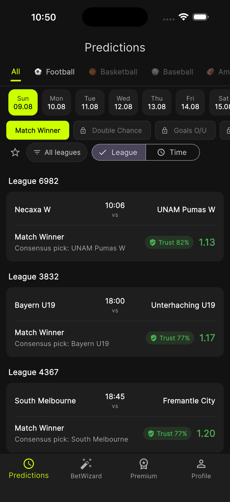
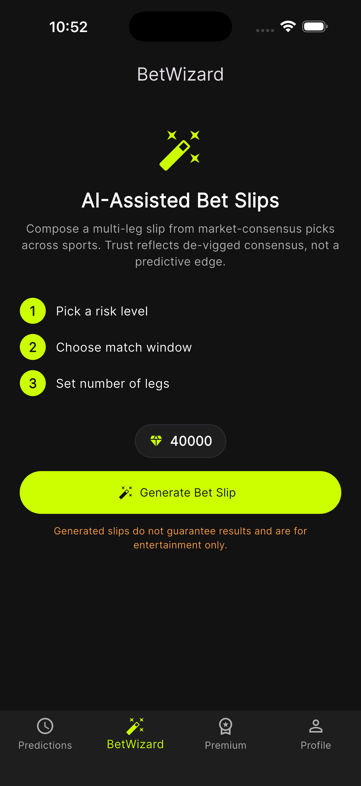
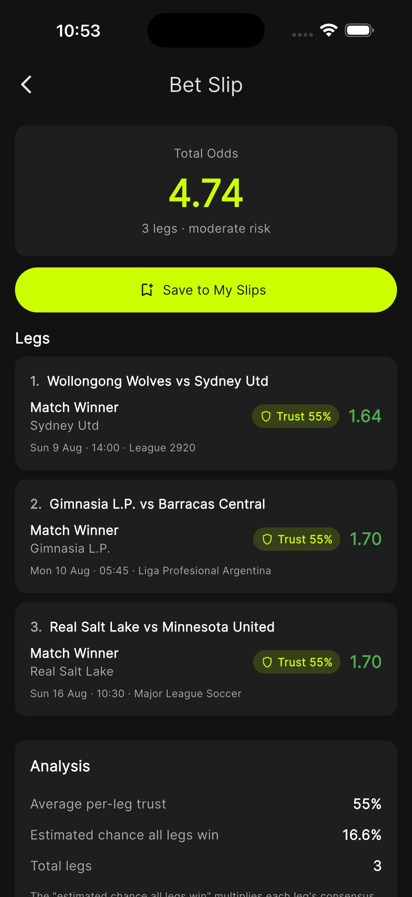
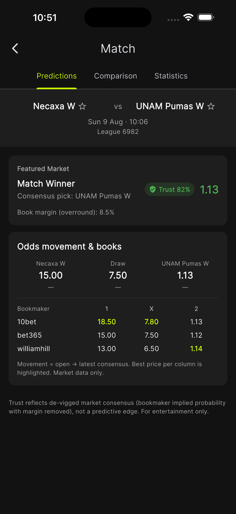
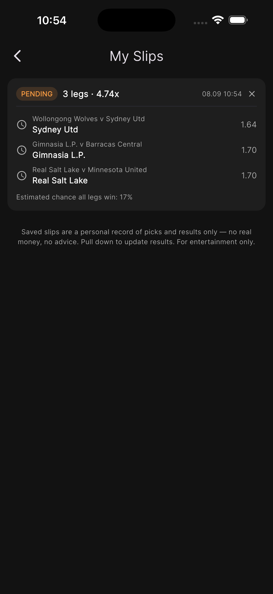
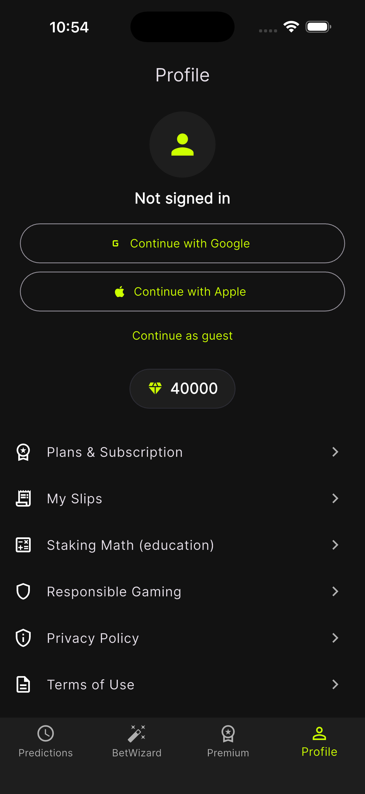
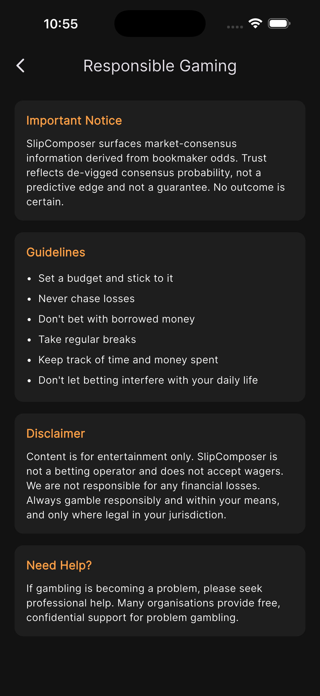

SlipComposer · iOS 1.0 · 심사 제출 직전
앱 전체 화면 22개, 그 사이의 흐름, 기능별 장단점, 그리고 수익·비용 구조입니다. 외부에서 디자인·UX 평가와 사업성 판단을 모두 할 수 있도록 코드와 스펙에서 직접 뽑아 정리했습니다.
#121212, 포인트 #CCFF00)과 실제 한국어
문구를 쓰되, 간격·타이포·아이콘은 정확하지 않습니다.
현재 코드에서 재구성했습니다 — 이 사이트의 다른 곳에 있는
스크린샷은 하단 탭이 4개이고 컴포저가 「BetWizard」이던 이전 빌드의
것이라, 그걸 보고 평가하시면 이미 고쳐진 것을 지적하게 됩니다.여러 북메이커의 배당을 모아 시장 컨센서스를 계산하고, 사용자가 고른 조건에 맞는 경기들을 묶어 멀티레그 슬립을 구성해 줍니다. 저장한 슬립은 경기가 끝나면 자동으로 적중·실패가 채점됩니다.
베팅을 받지 않고 돈을 보관하지 않습니다. 앱 안에서 실제 베팅을 걸 수 있는 경로는 없습니다. 종목은 축구·농구·야구·NHL·NFL·e스포츠·핸드볼이고, 7개 언어(한국어·영어·스페인어·포르투갈어·독일어·일본어·중국어)를 지원합니다.
앱 곳곳에 나오는 신뢰도(Trust) %는 북메이커 마진(overround)을 제거한 시장 컨센서스 확률입니다. "우리가 더 잘 맞힌다"가 아니라 "시장이 이 결과를 이 정도로 본다"입니다.
이 구분이 제품 전체를 규정합니다. 경쟁 예측 앱들이 "AI 적중률 90%"를 파는 자리에서 이 앱은 예측 우위를 주장하지 않습니다. 그래서 App Store 5.3(도박) 리젝 리스크가 구조적으로 낮고, 대신 소구력이 약해 보일 위험을 안습니다. 이 교환이 옳은지가 사업성 평가의 첫 질문입니다.
데이터는 StatPal(축구 심층 통계 + 배당)과 Highlightly(비축구 경기 배열)에서 받아 자체 백엔드가 정제하고, 앱 전용 BFF가 조립합니다. 종목은 데이터가 검증된 뒤에만 노출됩니다 — 배당이 붙은 예정 경기가 5개 미만인 종목은 탭에 나와도 흐리게 처리됩니다.
1.85와 Über 2,5).Product
기능마다 무엇이 강점이고 무엇이 약점인지, 그리고 저희가 아직 답을 모르는 것이 무엇인지. 약점 칸은 방어하지 않고 적었습니다 — 그게 리뷰를 받는 이유입니다.
| 기능 | 강점 | 약점 | 열린 질문 |
|---|---|---|---|
| 컨센서스 신뢰도 모든 화면의 % 수치 |
마진을 제거한 정직한 숫자. 과장 마케팅 없이 장기 신뢰를 쌓는 구조. 도박 정책 리젝 리스크가 낮습니다. | 차별점이 안 보입니다. "시장 컨센서스"는 설명이 필요한 개념이고, 경쟁 앱의 "AI 적중률"은 설명이 필요 없습니다. | 정직함을 마케팅 자산으로 세울 수 있습니까, 아니면 그냥 약한 소구입니까? |
| 슬립 컴포저 7단계 마법사 |
순수 예측 앱에는 없는 기능. 목표 배당을 넣으면 거기 맞춰 조합을 만들어 주는 것은 실제로 손이 많이 가는 일을 대신해 줍니다. | 7단계는 깁니다. 1단계에 "바로 생성" 단축이 있는데, 그러면 나머지 6단계의 존재 이유가 흐려집니다. | 단축을 기본으로 하고 마법사를 "세부 설정"으로 숨겨야 합니까? |
| 경기 찾기 조건 검색 + 유료 열람 |
사기 전에 개수와 분포를 무료로 봅니다. 필터가 쓸모 있었는지 판단하고 살 수 있습니다. 열람한 경기는 영구 보관·재사용. | 페이월이 하나 더 있는 셈입니다. 구독자도 일일 한도를 넘으면 또 다이아를 씁니다. | "세어 주고 팔기"가 공정하게 느껴집니까, 감질나게 느껴집니까? |
| 종목별 스마트 필터 | 같은 조건이라도 종목마다 의미가 다르다는 걸 반영합니다. "2.5 오버"는 축구에서만 질문이고 농구에서는 항상 참입니다. | 종목을 바꾸면 고른 칩이 소리 없이 사라집니다. 안내 한 줄뿐입니다. | 사라지는 것을 어떻게 알려야 합니까? |
| 자동 채점 내 슬립 |
재방문 동기의 핵심. 결과가 스스로 돌아오는 것이 앱을 다시 열 이유를 만듭니다. CSV로 내보낼 수도 있습니다. | 멀티레그 슬립은 원래 적중률이 낮습니다. 정직한 34%가 이탈을 만들 수도 있습니다. | 적중률을 크게 보여주는 게 맞습니까? 맥락을 같이 줘야 합니까? |
| 프리셋 + 기록 | 조건 묶음을 저장하고 그 프리셋의 성적을 추적합니다. 시장 컨센서스 대비 성적까지 나옵니다. 헤비 유저를 묶는 장치. | 프로필 안쪽에 묻혀 있습니다. 만드는 곳(경기 찾기)과 보관하는 곳(프로필)이 다릅니다. | 프리셋이 독립 탭이어야 할 만큼 중요한 기능입니까? |
| 7개 언어 | 솔로 개발 앱치고 드문 커버리지. 날짜·복수형·통화까지 현지화돼 있습니다. | 번역만으로는 시장이 열리지 않습니다. 리그 커버리지와 마케팅은 언어를 따라가지 않습니다. | 7개를 얕게 하는 것과 2~3개를 깊게 하는 것 중 어느 쪽입니까? |
| 데이터 게이팅 feed-health |
배당이 검증된 종목만 노출합니다. 빈 화면을 구조적으로 막습니다. | 종목이 임계값 근처에서 나타났다 사라집니다. 야구가 지금 그렇습니다. | 사용자에게 "이 종목은 오늘 없습니다"를 어떻게 설명해야 합니까? |
| 없는 것 | |||
| 라이브 스코어 | — | Sofascore·Flashscore가 가진 "매일 여는 이유"가 없습니다. 경기 중에는 앱을 열 일이 없습니다. | 이게 치명적입니까, 아니면 다른 앱의 일입니까? |
| 커뮤니티 · 공유 | — | 팁스터·리더보드·슬립 공유가 없습니다. 바이럴 장치가 전무합니다. 획득은 전부 유료여야 합니다. | 슬립 공유 하나만이라도 넣어야 합니까? |
| 제휴(affiliate) | 북메이커로 내보내지 않아 정책 리스크가 낮습니다. | 동종 앱의 가장 큰 수익원을 포기했습니다. 구독과 다이아만으로 버텨야 합니다. | 이 포기가 원칙입니까, 아니면 다시 볼 일입니까? |
Flow 01
순서가 고정입니다. 18세 확인은 앱을 쓰기 위한 조건이고, 분석 동의는 아니며, 기능 설명은 둘 다 아닙니다. 그래서 이 순서입니다.
age_gate.dart · 첫 실행에만, 이후 저장
리뷰 포인트
analytics_consent_gate.dart
리뷰 포인트
onboarding_screen.dart · 3장, 건너뛰기 가능
리뷰 포인트
Flow 02 · Tab 1
앱을 다시 열었을 때 기본으로 보이는 탭입니다. 경기 목록과 각 경기의 컨센서스 픽을 보여주고, 탭하면 상세로 들어갑니다.
predictions_screen.dart · 하단 탭 1
리뷰 포인트
match_detail_screen.dart · 탭 2개
리뷰 포인트
Flow 03 · Tab 2 — A
앱의 핵심 기능입니다. 그리고 가장 걱정하는 화면이기도 합니다 — 결과를 보기까지 7단계를 지나야 합니다.
composer_screen.dart · 탭 안의 탭 2개
리뷰 포인트
composer_flow_screen.dart · 상단 진행 바
리뷰 포인트
slip_result_screen.dart
리뷰 포인트
Flow 04 · Tab 2 — B
조건에 맞는 경기가 몇 개인지는 무료로 보여주고, 어느 경기인지를 다이아로 팝니다. 사기 전에 필터가 쓸모 있었는지 판단할 수 있게 하려는 구조입니다.
finder_screen.dart
리뷰 포인트
filter_picker_sheet.dart · 바텀시트, 75% 높이
리뷰 포인트
finder_screen.dart · _ResultSummary
리뷰 포인트
finder_results_screen.dart · match_slip_builder_screen.dart
리뷰 포인트
Flow 05 · Tab 3
구독 3티어 × 2주기, 다이아 팩, 프리셋 슬롯 팩. 총 15개 인앱 상품이 한 화면에 있습니다.
premium_screen.dart · 인앱 상품 15개
리뷰 포인트
plans_screen.dart · 프로필에서도 진입
리뷰 포인트
Flow 06 · Tab 4
저장한 슬립이 경기가 끝나면 자동으로 채점됩니다. 앱에서 유일하게 사용자가 옳았는지 틀렸는지가 나오는 곳입니다.
my_slips_screen.dart · 탭 2개
리뷰 포인트
Flow 07 · Tab 5
로그인, 프리셋, 도구, 설정, 법적 고지가 한 목록에 있습니다. 여기서 갈라지는 화면이 7개입니다.
profile_screen.dart · 하위 7화면
리뷰 포인트
presets_screen.dart · preset_record_screen.dart
리뷰 포인트
staking_calculator_screen.dart · responsible_gaming_screen.dart · legal_screen.dart · language_screen.dart
리뷰 포인트
Captures
지금 가진 실기기 캡처는 2026년 8월 빌드의 것입니다. 시각 언어(다크 + 라임, 카드 형태, 타이포)를 평가하시기엔 여전히 유효하지만, 구조는 위의 구조도가 맞습니다. 무엇이 달라졌는지 각 캡처 아래에 적었습니다.







리뷰 포인트
#CCFF00)이 너무 많이 쓰이는지. 배당·픽·버튼·탭
강조에 전부 같은 색을 씁니다.Web
앱만큼 중요한 디자인 면입니다. 이 사이트의 루트(/)에 있고,
앱 스토어 심사자와 잠재 사용자가 개인정보 처리방침 링크를 타고 들어옵니다.
지금 열어보기 →
index.html · 375줄 · 한/영 병기 · GitHub Pages
리뷰 포인트
Reference
22개 화면이 각각 무엇을 할 수 있는지 한 표로. 위의 화면 카드가 설명이라면 이건 목록입니다 — 빠진 기능을 찾거나, 어느 화면이 과부하인지 세어 보실 때.
| 화면 | 할 수 있는 것 | 상태 · 게이트 |
|---|---|---|
| 진입 (첫 실행에만) | ||
| 연령 확인 | 18세 이상 확인 후 통과 | 1회, 이후 저장 |
| 분석 동의 | 익명 사용 데이터 수집 동의 / 거부 | 1회, 프로필에서 변경 가능 |
| 온보딩 | 3장 넘기기 · 건너뛰기 · 시작하기 | 1회 · 끝나면 컴포저 탭 |
| 탭 1 · 예측 | ||
| 예측 피드 | 종목 전환(전체 포함) · 날짜 선택 · 마켓 전환 · 리그 필터 · 리그☆팔로우 · 정렬(리그/시간) · 즐겨찾기만 보기 · 경기 카드 탭 → 상세 · 빈 날이면 다음 경기 날짜로 이동 | 마켓 전환 PRO 배너 광고(무료) |
| 경기 상세 | 컨센서스 픽 · 최근 5경기 폼(전적·평균 득실) · 상대전적 · 시장 일치도 · 비슷한 경기 · 팀☆팔로우 | — |
| └ 비교 탭 | 배당 변동(시가→최신) · 북메이커별 가격 · 최고가 하이라이트 · 컨센서스 대비 % · 큰 변동 표시 | PRO |
| 탭 2 · 컴포저 | ||
| 컴포저 홈 | 「베팅 슬립 / 경기 찾기」 전환 · 7단계 미리보기 · 바로 생성 | — |
| 7단계 마법사 | 1 종목(다중) · 2 위험(3단계) · 3 기간(1~30일) · 4 레그 수 또는 자동 · 5 팀·리그 · 6 조건 필터 · 7 목표 배당 범위 · 단계 건너뛰기 · 1단계에서 바로 생성 | 5·6단계 PRO 생성 10💎 |
| 슬립 결과 | 총 배당 · 레그 목록(킥오프·리그·픽·배당·신뢰도) · 목표 충족 여부 · 지정 경기 포함/제외 안내 · 경기당 평균 신뢰도 · 저장 | 저장은 수동 |
| 경기 찾기 | 종목 탭(전체 포함) · 스마트 필터 선택 · 정밀 필터 · 기간 슬라이더 · 검색 · 프리셋으로 저장 | 정밀 필터 PRO 검색 10회/일(무료) |
| └ 필터 시트 | 스마트 필터 칩 전체(종목별로 달라짐) · 저장된 프리셋 실행 · 적용 | 프리셋 슬롯 제한 |
| └ 검색 결과 | 총 개수 · 리그 분포 · 날짜 분포 · 정렬 전환 · 1개 / 5개 / 전체 열람 구매 | 열람 5💎~ |
| └ 열람한 경기 | 경기 목록 · 충족 조건 증거 칩(수치+표본) · 선택 · 슬립 만들기 | — |
| └ 슬립 빌더 | 전체 선택/해제 · 「선택한 경기만」 또는 「더 큰 슬립에 포함」 · 생성 | 생성 10💎 |
| 탭 3 · 프리미엄 | ||
| 프리미엄 | 혜택 5줄 · 구독 6종 · 다이아 6팩 · 슬롯 3팩 · 구매 · 구매 복원 · 약관/개인정보 링크 · 잔액 표시 | 상품 15개 |
| 플랜 비교 | 4개 플랜 카드 비교 · 구매 화면으로 이동 | 프로필에서도 진입 |
| 탭 4 · 내 슬립 | ||
| 저장한 슬립 | 적중/실패/대기 목록 · 누적 적중률 · 승패 · 당겨서 채점 갱신 · 삭제 · CSV 내보내기 | 저장 한도(플랜별) |
| 열람한 경기 | 구매한 경기 재사용 · 여기서 다시 슬립 생성 | 경기 시작 전까지 |
| 탭 5 · 프로필 | ||
| 프로필 | Apple/Google 로그인 · 다이아 잔액 · 플랜 배지 · 하위 7개 화면 진입 · 분석 동의 토글 · 로그아웃 · 계정 삭제 | — |
| 내 프리셋 | 목록 · 드래그 재정렬 · 실행(경기 찾기) · 슬립 즉시 생성 · 삭제 · 기록 보기 · 슬롯 초과분 「잠김」 표시 | 슬롯 수(플랜별 + 구매) |
| 프리셋 기록 | 전체/최근 30일 전환 · 적중률 · 컨센서스 대비 · 슬립별 결과 · 표본 부족 시 숫자 숨김 | — |
| 베팅 금액 계산 | 자금·배당·승률 입력 · 고정 2% · 전체/½/¼ 켈리 · 우위 없으면 0 표시 | 교육용, 서버 미연동 |
| 언어 | 시스템 기본 + 7개 언어 · 즉시 반영 | 재시작 불필요 |
| 책임감 있는 베팅 | 안내 · 지침 6개 · 면책 · 도움받을 곳 | 심사 확인 항목 |
| 약관 · 개인정보 | 전문 열람 · 최종 수정일 | 앱 내 표시(웹뷰 아님) |
UX 판단에 필요한 경계입니다. 어떤 화면이 무료 사용자에게 어떻게 보이는지가 여기서 결정됩니다.
| 항목 | 무료 | Basic | Pro | Unlimited |
|---|---|---|---|---|
| 일일 슬립 | 1 | 5 | 15 | 무제한 |
| 경기 찾기 무료 열람 | 0 · 건별 결제 | 5/일 | 15/일 | 40/일 |
| 마켓 | 경기 승자만 | 전체 | 전체 | 전체 |
| 배당 변동 · 북메이커 비교 | — | — | ✓ | ✓ |
| 팀·리그 · 조건 필터 | — | — | ✓ | ✓ |
| 슬립 저장 한도 | 10 | 30 | 100 | 무제한 |
| 광고 | 배너 | 없음 | 없음 | 없음 |
다이아는 플랜과 완전히 별개입니다. 구독은 다이아를 주지 않습니다 — 사거나, 매일 로그인해서 모읍니다. 한때 Basic에 100💎, Pro에 300💎을 줬는데 슬립을 다이아로도 살 수 있게 되면서 표기된 일일 한도와 모순됐고 (하루 300💎이면 Pro의 15개가 아니라 45개), 가장 큰 다이아 팩(1,500💎)보다 구독 부수입이 커져 버려서 전부 0으로 내렸습니다.
Basic과 Pro는 슬립 수와 열람 수가 같은 숫자입니다(5와 15). 구독으로 설명할 숫자를 하나로 줄이려는 의도인데, 두 기능을 하나의 숫자로 묶는 것이 이해에 도움이 되는지 아니면 오히려 헷갈리게 하는지 — 이것도 봐주셨으면 하는 지점입니다.
Business
아래 가격은 전부 확정값입니다(App Store Connect에 등록된 15개 SKU). 다이아 소비량과 무료 지급량은 서버 코드의 실제 상수입니다.
| 구분 | 상품 | 가격 (USD) | 비고 |
|---|---|---|---|
| 구독 자동 갱신 |
Basic 월 / 연 | $9.99 / $99.99 | 연간은 12개월 가격에서 2개월 할인(≈17%). 주간·6개월은 2026-09-03에 폐기 — 3티어 × 4주기면 비교할 가격이 12개고, 주간 결제는 이탈할 사람을 골라냅니다. |
| Pro 월 / 연 | $19.99 / $199.99 | ||
| Unlimited 월 / 연 | $29.99 / $299.99 | ||
| 다이아 소모성 |
10 / 55 / 120💎 | $0.99 / $4.99 / $9.99 | 큰 팩일수록 단가가 내려갑니다: $0.099/💎 → $0.067/💎 |
| 260 / 700 / 1,500💎 | $19.99 / $49.99 / $99.99 | ||
| 프리셋 슬롯 영구 |
+1 / +3 / +10 | $0.99 / $1.99 / $4.99 | 한 번 사면 유지됩니다. 가장 작은 매출원. |
| 행동 | 비용 | 큰 팩 기준 환산 | 작은 팩 기준 |
|---|---|---|---|
| 슬립 1개 생성 (일일 무료분 소진 후) | 10💎 | $0.67 | $0.99 |
| 경기 1개 열람 | 5💎 | $0.33 | $0.50 |
| 29경기 일괄 열람 (0.6배 할인) | 87💎 | $5.80 | $8.61 |
| 일괄 열람 상한 | 200💎 | $13.33 | — |
Basic($9.99/월)이 주는 것은 하루 슬립 5개 + 열람 5개, 30일이면 슬립 150개 + 열람 150개 = 2,250💎입니다. 같은 양을 다이아로 사면 가장 싼 팩 단가로도 약 $150입니다.
즉 구독이 다이아보다 15배 싸고, Pro는 22배입니다. 규칙적으로 쓰는 사람은 반드시 구독으로 갑니다. 퍼널 설계로는 옳지만, 다이아 매출은 "무료 티어를 막 넘어선 사람"에게만 남습니다. 다이아 팩 6개가 그만한 가치가 있는지가 질문입니다.
합치면 첫 달에 돈 한 푼 없이 슬립 약 70개를 만들 수 있습니다. 광고는 배너 하나뿐이고, Basic($9.99)부터 광고가 사라집니다 — 즉 광고 매출은 무료 사용자에게서만 나오는데 그 무료 사용자가 꽤 오래 무료로 지낼 수 있습니다. 무료 티어가 너무 관대한지가 두 번째 질문입니다.
| 항목 | 성격 | 규모를 정하는 것 |
|---|---|---|
| 배당 데이터 (StatPal) | 변동비 — 가장 큽니다 | 배당 갱신이 리그당 유료 호출 1회씩 발생하고 기본 주기가 1시간입니다. 즉 리그 수 × 24 × 30 호출/월. 노출 종목을 늘리면 사용자와 무관하게 비용이 오릅니다. |
| Highlightly | 변동비 | 비축구 종목의 경기 배열. 종목 수에 비례. |
| Railway 호스팅 | 준고정비 | 백엔드 + PostgreSQL. 트래픽이 붙기 전까지 사실상 고정. |
| Firebase | 거의 0 | 인증·푸시·크래시·분석. 이 규모에서는 무료 한도 안. |
| Apple 수수료 | 매출의 15% 또는 30% | 연 100만 달러 미만이면 Small Business Program 15%. Basic $9.99 → 실수령 $8.49. |
| 인건비 | — | 1인 개발·운영. 현금 비용에는 안 잡히지만 단일 실패 지점입니다. |
구조는 단순합니다: 필요 구독자 수 = (StatPal + Highlightly + Railway) ÷ (구독가 × 0.85)
Basic만으로 채운다면 구독자 1명당 월 $8.49가 들어옵니다. 월 고정·변동비가 $850이면 100명, $2,000이면 236명입니다.
이 문서에서 유일하게 비어 있는 값이 StatPal 계약 단가입니다. 호출 수는 위 공식으로 정확히 나오지만 단가는 계약서에 있습니다. 사업성을 판단하시려면 그 숫자부터 채워야 하고, 그것이 이 사업의 가장 중요한 단일 변수입니다 — 리그를 늘리면 사용자가 없어도 비용이 오르기 때문입니다.
| 구분 | SlipComposer | Forebet · Betmines 예측형 | Sofascore · Flashscore 스코어형 | Oddspedia · OLBG 오즈·팁스터형 |
|---|---|---|---|---|
| 핵심 | 컨센서스 + 슬립 조합 | AI 승률 예측 | 라이브 스코어 | 오즈 비교 · 커뮤니티 팁 |
| 신뢰도 표기 | 마진 제거 컨센서스 | "AI 적중률" (과장 경향) | 부가적 | 팁스터 승률 |
| 멀티레그 조합 | ✅ 핵심 기능 | 일부 (단식 위주) | ❌ | ❌ |
| 라이브·인플레이 | ❌ | 제한적 | ✅ 강점 | 부분 |
| 커뮤니티 | ❌ | 부분 | 코멘트 | ✅ 강점 |
| 수익 모델 | 구독 + 다이아 | 광고 + 구독 | 광고 + 구독 | 제휴 |
| 정책 리스크 | 낮음 (베팅 유도 없음) | 중간 | 낮음 | 높음 |